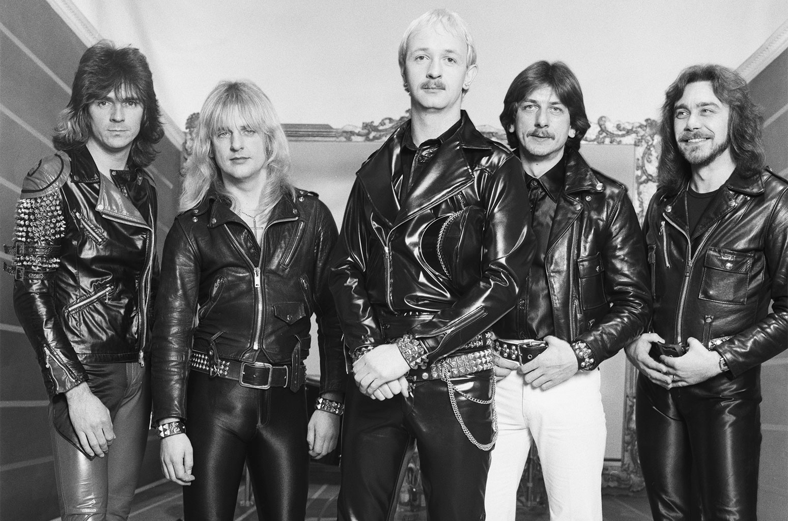

Heavy Metal
Influences
Heavy Metal sees it's roots in a wide variety of blues rock, acid rock, psychadelic rock and garage rock in the 50s and 60s. Three bands, known as unholy trinity, however, are the three bands indisbutably responsible for the creation of heavy metal, achieved by mixing all these sound with the goal of creating something evil and heavy. These bands are Deep Purple, Led Zeppelin and Black Sabbath, which would go on to become one of the biggest heavy metal acts of all time.
Description
Heavy metal is traditionally characterized by loud distorted guitars, emphatic rhythms, dense bass-and-drum sound, and intense vocals. The other subgenres mentioned on this website, emphasize, alter, add to, or omit one or more of these properties. The typical heavy metal lineup includes a drummer, a bassist, a rhythm guitarist, a lead guitarist, and a singer, who may or may not also play one of the aformentioned instruments. Solos are pretty much ubiquitous in heavy metal.
Lyrical themes of Heavy Metal have been said to be "on dark and depressing subject matter to an extent hitherto unprecedented in any form of pop music", which is super sick. Heavy Metal bands also didn't care what the Karens of the world thought, they sung about all manner of death, destruction, drugs, sex (especially BDSM), suicide, war, political protest, and all other manners of degenerate topics, leading to people with nothing else to do in their lives, calling for them to be censored. This only made metal more popular. \m/
Brief History
Heavy Metal really started with Black Sabbath's Debut Single "Black Sabbath" off of their debut album "Black Sabbath" in 1970. What's sick too is that they simultaneously created doom metal and heavy metal at the same time. After this, an absolute mega ton of bands such as led zeppelin, deep purple, blue cheer, steppenwolf and all these other rock bands were like "thats sick" and started making heavy metal, which is also sick, because you cannot have enough metal. In the 1980s, metal got enormous in the 1980s, which led to a bit more melody and speed being fused in, cementing it as its own identity, as many subgenres started to flourish.
Examples

- Black Sabbath
- Judas Priest
- Iron Maiden
- Blue Oyster Cult
- Deep Purple
- Saxon
- Diamond Head
- Quiet Riot
- Van Halen
- Dio
Subgenres and Regional Scenes
Major Subgenres
Literally the rest of this website